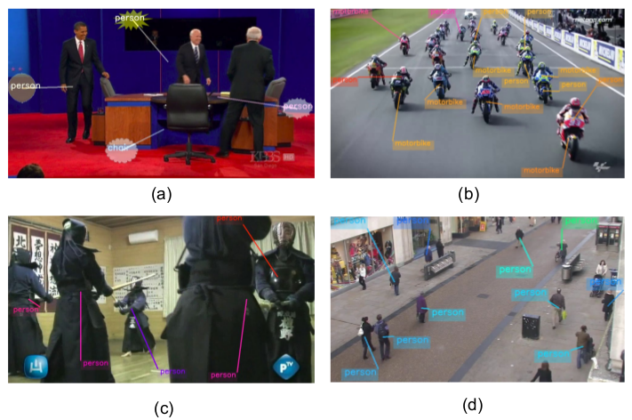
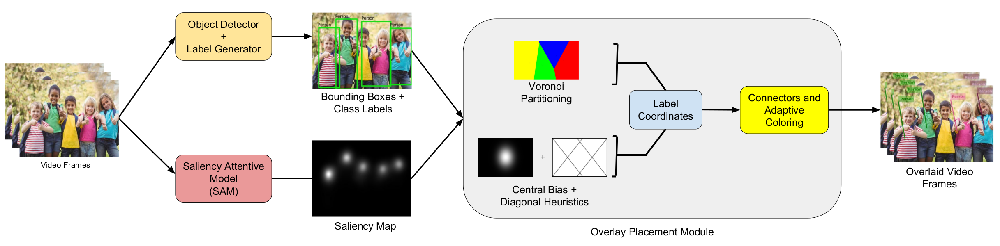
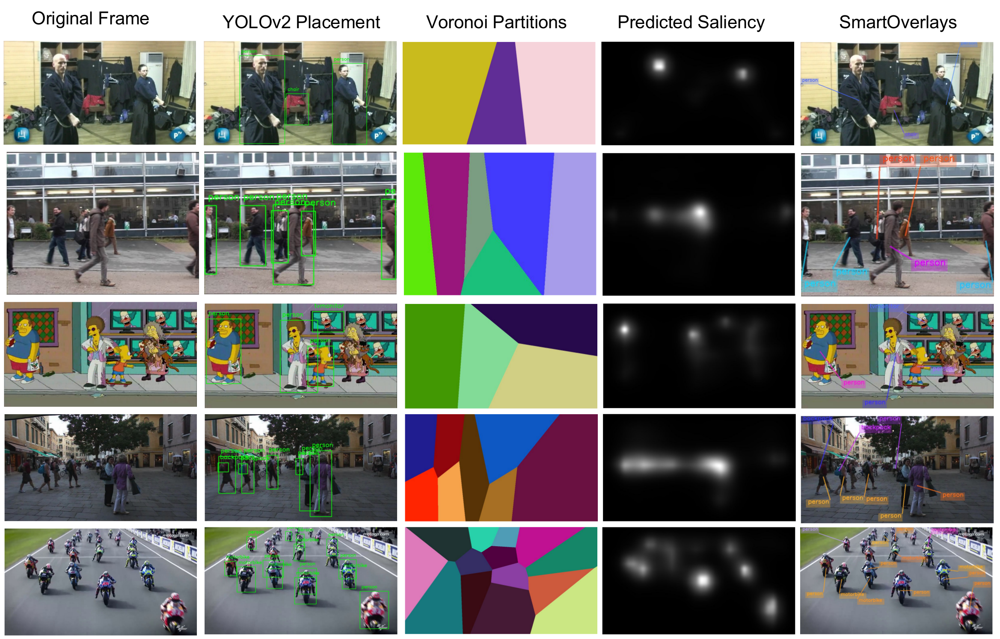

Abstract
Computer generated labels in augmented reality applications and user interfaces assist in understanding a scene better by adding contextual information. However, naive label placement often results in clutter and occlusion, impairing the effectiveness of AR visualization. Therefore, the labels ideally should (i) not occlude the object/scene of interest, (ii) be optimally placed close to the object for better interpretation of scene, and (iii) obey the rules of aesthetics. This makes spatial placement of labels a challenging task. To this end, we present a novel method for optimal placement of multiple labels corresponding to different objects of interest in a video. Our proposed framework, SmartOverlays, identifies the objects and generates corresponding labels using a YOLOv2 in a video frame. We exploit visual saliency for placing the labels for satisfying aforementioned constraints by generating saliency maps from a Saliency Attention Model (SAM) that learns eye fixation points. Finally, we place the labels corresponding to detected objects in the decreasing order of object's saliency which we decide by observing the salient regions occupied by the object in a video frame. We compute Voronoi partitions of the video frame, choosing the centroids of objects as seed points, to place labels for satisfying the proximity constraints with object of interest. We use an adaptive color scheme for label text color contrasting from the background texture. In order to measure the effectiveness of SmartOverlays framework, we introduce a new evaluation metric, which we term as the Label Occlusion over Saliency (LOS) score, in addition to reporting the computation time. We subjectively evaluate our framework with metrics from user studies that include position, temporal coherence in the overlay, adaptive color contrast, and readability.

Key Contribution
- We propose a novel method that places multiple labels with unconstrained geometry on video frames and live feed. This comprises of a Saliency Attention Model (SAM) for computing visual saliency, an object detector such as YOLOv2, followed by the use of Voronoi partitioning to avoid label/leadline overlap and simple adaptive color schemes for overlays in dynamic backgrounds.
- We introduce a new evaluation metric, Label Occlusion over Saliency score (LOS), for measuring the effectiveness of overlay placement.
The Idea

We take video frames as input to our pipeline which we pass to object detector and label generator module and SAM for saliency estimation. The object detector and label generator produce bounding box for all the detected objects along with their respective class labels. Thus it also creates object-label correspondences. SAM computes the saliency maps for each of the video frames. In the final module, we compute the overlay position for each label in a frame based on the object-label correspondences, saliency maps and placement objectives.
Results
